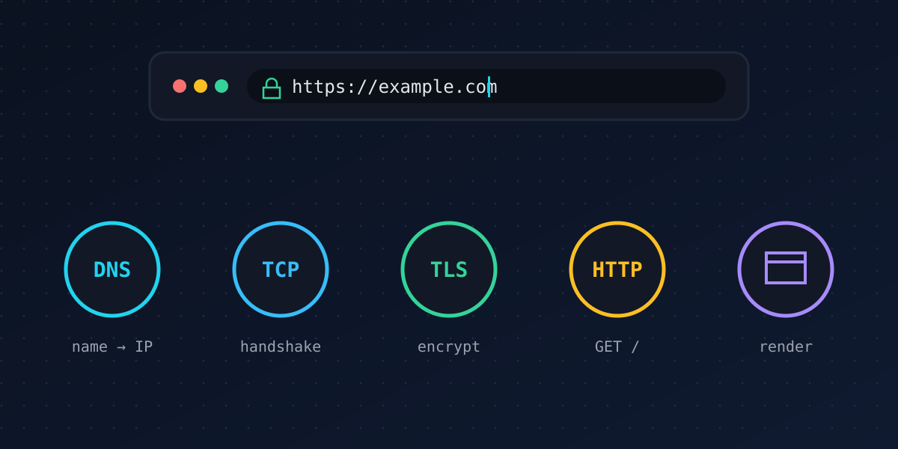

// systems & cloud · 7 min read
What actually happens when you type a URL and press Enter
Published Nov 11, 2026

You type example.com, press Enter, and a page appears in well under a second. In that blink, your computer talks to several machines, possibly on different continents, agrees on encryption keys and builds a page from scratch. Here's the tour, one stop at a time.
0. The browser reads what you typed
First the browser decides whether you typed an address or a search. If it's an address, it fills in the missing pieces, usually https://. It also checks whether it already has a fresh copy of the page in its cache, and whether the site has told it to always use HTTPS (a policy called HSTS).
1. DNS: finding the address
Computers on the internet are reached by IP address, not by name. The Domain Name System is the phone book that translates. The browser asks its own cache, then the operating system, then a resolver, usually run by your internet provider or a public DNS service.
If the resolver doesn't know the answer, it asks the chain of authority: a root server points to the servers for .com, which point to the servers responsible for example.com, which finally return the IP address. Answers are cached at every level, so most lookups take a few milliseconds.
2. TCP: opening a reliable line
The internet only promises to try to deliver small packets. TCP builds a reliable, ordered stream on top of that, starting with a three-step handshake: SYN, SYN-ACK, ACK. That costs one full round trip to the server before any real data moves.
Newer connections increasingly use HTTP/3, which runs over QUIC on UDP. QUIC combines the connection and encryption setup to save round trips.
3. TLS: agreeing on secrets
Next comes the TLS handshake, the padlock in your address bar. In TLS 1.3 it takes one round trip, and it does two jobs:
- Authentication: the server presents a certificate, signed by an authority your browser trusts, proving it really is
example.com. - Key exchange: both sides agree on fresh encryption keys that eavesdroppers can't work out. Modern browsers increasingly use hybrid post-quantum key exchange here.
4. HTTP: asking for the page
Finally the browser sends the actual request, something like GET / HTTP/2 with headers describing what it accepts and any cookies for the site. The server, or a CDN in front of it, replies with a status code (200 OK, 301 redirect, 404 not found…) and the HTML.
5. Rendering: from text to pixels
- The browser parses the HTML into a tree called the DOM, and discovers more files to fetch: CSS, JavaScript, images, fonts.
- It parses the CSS into rules and matches them to elements.
- JavaScript runs and may change the page.
- Layout works out the size and position of every box, paint fills in the pixels, and compositing stacks the layers on the GPU.
Browsers start drawing before everything has arrived, which is why pages appear progressively rather than all at once.
The takeaway
One Enter key triggers a name lookup, a connection, a cryptographic handshake, a request and a rendering pipeline. Each layer was invented to solve one problem, and knowing them is the fastest way to debug why a site is slow or broken.